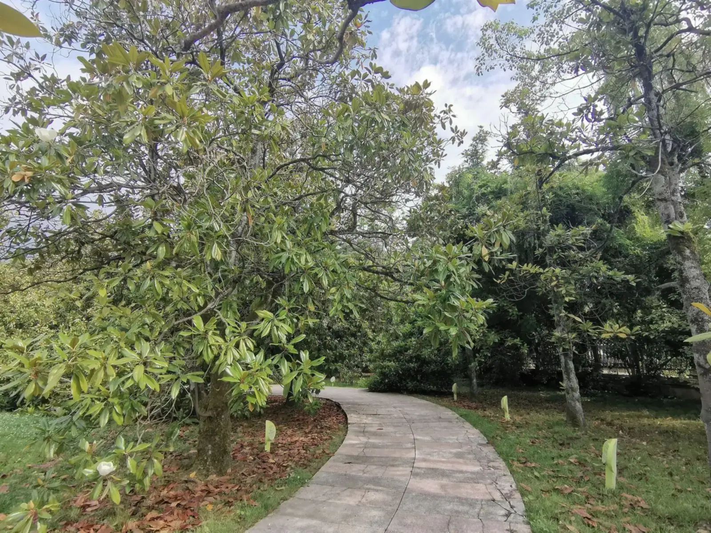
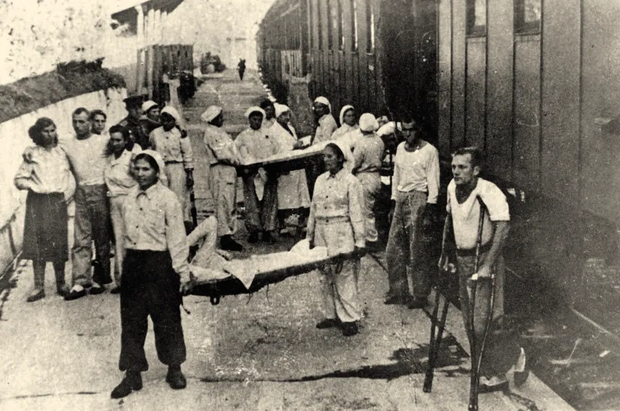
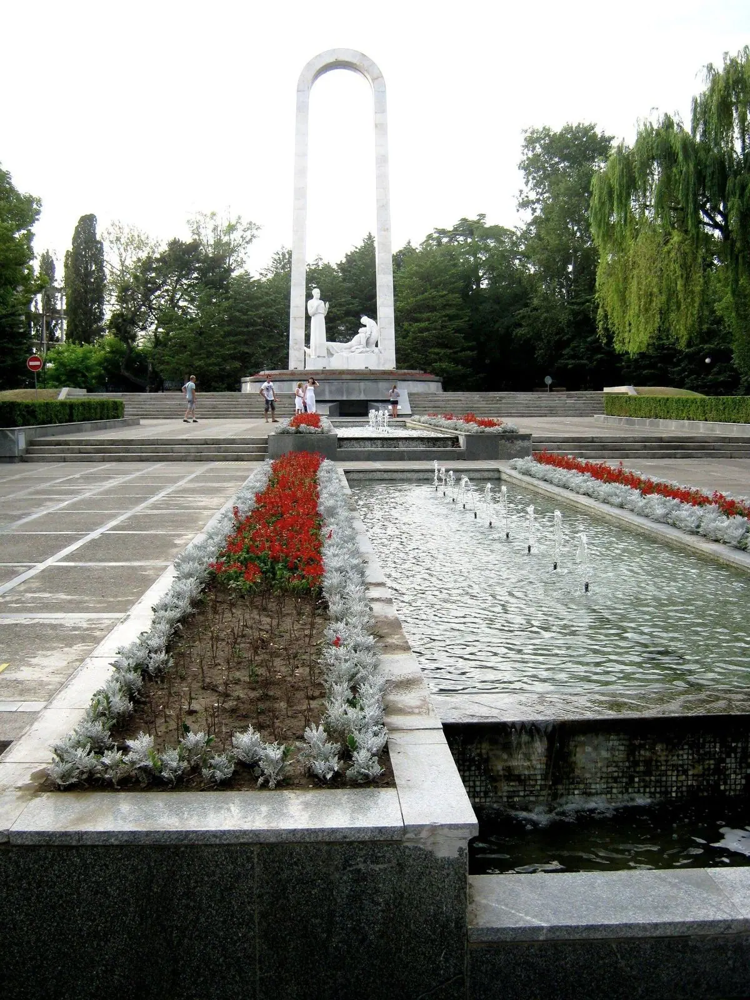

[тишина]
5 августа 1941 года, 11 часов. Почти весь город вышел на улицу Горького: по ней в тишине шли первые санитарные машины с ранеными.
По материалам ГУ МЧС России по Краснодарскому краю, 2020
Глава третья
1898
«Ривьера» и «Подвиг во имя жизни»
Парк, где гуляли отдыхающие, в 1941 году стал тылом госпиталей.
Парк «Ривьера» и мемориал у его входа

Аллея магнолий в парке «Ривьера». Сегодня
Фото: Elizabetth Valerievna, CC BY-SA 4.0
Что это
Парк купца, курорт и город-госпиталь
Парк «Ривьера» — один из главных парков центра Сочи, у реки: 14 гектаров и больше 10 000 деревьев и кустарников. Он начинался как частный парк купца Василия Хлудова, потом стал городским.
Рядом в 1909 году открыли курорт «Кавказская Ривьера». В 1941–1945 годах санатории и сам город работали как госпитали, а у входа в парк теперь стоит мемориал «Подвиг во имя жизни» — памятник врачам, медсёстрам и раненым.
- Где
- Центральный район, у реки Сочи; мемориал — в начале Курортного проспекта
- Когда
- парк 1885–1898, городской с 1902, «Ривьера» с 1937; госпитали 1941–1945
- Кто
- купец Василий Хлудов, агроном Рейнгольд Гарбе, профессор Густав Вобст
- Сейчас
- городской парк; мемориал открыт 8 мая 1995 года
Как это появилось
От имения к курорту
1882–1898
Купец Василий Хлудов (1841–1913) унаследовал капитал в 1882 году и вложил его в землю у Даховского посада. К 1883 году у него было 1 284 десятины между реками Сочи и Псахе: сады, виноградник, табачные плантации, винный завод. Парк при имении начали разбивать в 1885 году по проекту агронома Рейнгольда Гарбе и профессора Густава Вобста, главного садовника Московского ботанического сада. Разбивку закончили в июле 1898 года.
1901–1902
Привозные сорта винограда и плодовых деревьев приживались плохо, другие вложения Хлудова тоже оказались неудачными. В 1901 году он продал имение государству, и с 1902 года «Хлудовский парк» стал городским.
1909
На казённой земле бывшего имения построили курорт «Кавказская Ривьера» — на средства московского предпринимателя А. В. Тарнопольского. Открытие 14 (27) июня 1909 года считают началом Сочи как курорта. К 1913 году в нём были четыре гостиницы на 250 номеров, театр на 600 мест, свой водопровод и электричество.
1914–1915
В октябре 1914 года курорт принял первых раненых Первой мировой войны и лечил их бесплатно до марта 1915 года.
1920–1937
Курорт и парк . В 1920-е годы парк назывался «Парк Курупра» (от «Курортное управление»), а в 1937 году стал парком культуры и отдыха «Ривьера».
1940
Накануне войны в Сочи работали 61 на 8 960 мест.
Сравните
Дача Хлудова: оригинал и новодел


Госпитальная база Сочи в цифрах, 1940–1945
| Когда | Что | Сколько |
|---|---|---|
| 1940 | здравниц · мест | 61 · 8 960 |
| июль 1941 | коек по телеграмме Совнаркома | 20 360 |
| 1 августа 1941 | госпиталей · коек | 24 · 12 600 |
| 5.08.1941–1.08.1942 | раненых и больных принято | 92 903 |
| 1 января 1945 | госпиталей · коек | 32 · 13 950 |
| 5.08.1941–1.07.1945 | прошли лечение | 335 955 |
| 5.08.1941–1.07.1945 | не удалось спасти | 6 834 |

- Табло госпитальной базы: на вокзал Сочи приходили санитарные поездаЛистайте: строки откроются по одной
- 1940: в Сочи 61 здравница на 8 960 мест
- Июль 1941: Совнарком СССР телеграммой требует создать в Сочи госпитальную базу на 20 360 коек
- К 1 августа успели развернуть 24 госпиталя на 12 600 коек: санатории стали госпиталями
- 5 августа пришли первые раненые. За первый год госпитали приняли 92 903 человека
- 1 января 1945 года: 32 госпиталя на 13 950 коек«Российская газета», 13 мая 2020
- До 1 июля 1945 года через госпитали Сочи прошли 335 955 раненых и больных. Больше 100 000 вернулись на фронт
- Не удалось спасти 6 834 человека«Российская газета», 13 мая 2020

Город-госпиталь
Раненых лечили в санаториях, но работал на них весь город. Памятник у входа в парк — не генералам, а врачам, медсёстрам и раненым.
Мемориал «Подвиг во имя жизни». Фото: Георгий Долгопский, 2016, CC BY-SA 3.0
Как это было
1941–1995
Июль 1941
Совнарком СССР телеграммой потребовал создать в Сочи госпитальную базу на 20 360 коек. К 1 августа успели развернуть 24 на 12 600 коек.
5 августа 1941
В 11 часов почти весь город вышел на улицу Горького: по ней в тишине шли первые санитарные машины с ранеными. До 1 июля 1945 года через сочинские госпитали прошли 335 955 раненых и больных воинов; более ста тысяч из них вернулись на фронт.
1941–1945
Жители работали на госпитали: мыли и красили палаты, шили бельё из миллиона метров белой ткани, собирали в лесах каштаны и орехи. Сочи стал .
8 мая 1980
Город наградили — «за большую и самоотверженную работу трудящихся города по лечению и восстановлению здоровья воинов Советской Армии и Военно-Морского флота в годы Великой Отечественной войны» (формулировка указа по «Википедии»).
1974–1995
Мемориал «Подвиг во имя жизни» начали строить в 1974 году, а открыли 8 мая 1995 года, к 50-летию Победы. Авторы — скульптор Дмитрий (Даниил) Рябичев и архитектор Ю. Львов. Рябичев умер 29 апреля 1995 года, за девять дней до открытия, и памятник закончил его сын, скульптор Александр Рябичев (Википедия, статья о Д. Б. Рябичеве).
Источник: воспоминания председателя горсовета А. Ф. Белоуса
«Закончив рабочий день, люди, не считаясь с усталостью и временем, шли в госпитали: мыли, скребли, переносили кровати, мебель. Закройщики пошивочных мастерских города раскроили один миллион метров белого материала. Получив раскрой, работницы и домохозяйки шили белье. Школьники отправились в тисо-самшитовую рощу и собрали с деревьев тонны мха для набивки матрацев...»
- Кто пишет
- Глава города в годы войны: он сам организовывал эту работу.
- Что даёт
- Тыл изнутри: кто мыл палаты, шил бельё и собирал мох для матрацев.
- Что учесть
- Мемуары мы читаем в пересказе МЧС; ту же деталь про мох приводит «Российская газета». Первоисточник не открывали.
Ещё один документНадпись на арке у входа в парк

Источник: надпись на арке у входа
«Парк Ривьера. Основан в 1898 году»
Фото: [Olya Usovaツ], CC BY 3.0
- Что верно
- В июле 1898 года купец Хлудов закончил разбивку парка при своём имении.
- Что уточнить
- Городским парк стал в 1902 году, а «Ривьерой» называется только с 1937-го. Надпись сводит три даты в одну.
1941
«Закройщики пошивочных мастерских города раскроили один миллион метров белого материала.»
А. Ф. Белоус, председатель Сочинского горсовета в годы войны; по материалу ГУ МЧС России по Краснодарскому краю, 2020
Галерея
Парк, курорт, госпиталь
На что посмотреть на месте
Пять точек в парке и у входа
Мемориал «Подвиг во имя жизни»
Стальная арка, у подножия которой мраморные и гранитные фигуры врачей, медсестёр и раненых. Он стоит в начале Курортного проспекта рядом с главным входом в парк. Авторы — московский скульптор Д. Рябичев и сочинский архитектор Ю. Львов; памятник закончил в 1995 году скульптор А. Рябичев.
Дача Хлудова — это новодел
Первую дачу построили в 1896 году по проекту Л. Н. Кекушева; купол был покрыт узором-шахматкой. Десятилетия здание стояло без ремонта, в ноябре 2009 года его снесли и возвели заново из современных материалов. Результат заметно отличается от оригинала: сравните открытку 1900-х и сегодняшний яркий жёлто-оранжевый фасад.
Поляна дружбы и Аллея космонавтов
Главная достопримечательность парка — поляна, где растут магнолии, посаженные известными политиками и космонавтами. Всего на Поляне дружбы и Аллее космонавтов около ста деревьев.
Вечнозелёные и зимоцветущие растения
В парке 240 видов растений, большая часть — вечнозелёные, многие цветут зимой. Поэтому «Ривьера» привлекательна и в январе.
Пляж «Ривьера» на месте курорта
Курорт «Кавказская Ривьера» — федеральный памятник архитектуры. На его месте сегодня пляж «Ривьера» длиной 700 метров, границей служит устье реки Сочи.
Значение для Сочи
Курорт показал, зачем он нужен государству: за 1941–1945 годы через сочинские госпитали прошли 335 955 раненых и больных, а в 1980 году город наградили орденом Отечественной войны I степени.
Значение для России
Пример самоотверженности тыла: здравницы, парк и жители города работали на то, чтобы раненые возвращались в строй.
Раздел курса: 2. Российское государство-цивилизация
Ценность: любовь и ответственность

Факт, который мало кто знает
В войну на клумбах парка «Ривьера» росли лук, морковь и картофель для госпитальных кухонь. А мох для матрацев и обеззараживания ран школьники собирали в Тисо-самшитовой роще — в той самой, куда ведёт маршрут в главе 8.
Эвакогоспиталь № 2124: первые раненые у корпуса санатория, 1941. Фотография 1941 года; сайт РВИО (Сочи) «Сочи в годы ВОВ», PastVu № 1485643
Что вы узнали
Три вещи о «Ривьере»
Три имени одного парка
«Ривьера» прошла путь от частного парка купца (разбивка закончена в 1898 году) через городской парк (1902) до парка культуры и отдыха «Ривьера» (название с 1937 года).
Курорт стал госпиталем
Курорт «Кавказская Ривьера» (1909) уже принимал раненых в Первую мировую; в 1941 году весь город превратили в госпитальную базу — 24 госпиталя на 12 600 коек к 1 августа.
Цена и результат
С августа 1941 по 1 июля 1945 года через сочинские госпитали прошли 335 955 раненых и больных, более 100 тысяч вернулись на фронт; в 1980 году город получил орден Отечественной войны I степени.
Проверьте себя Почему в Сочи мемориал врачам, а не воинам?
Фронт до Сочи не дошёл, но город бомбили; он воевал госпиталями. За 1941–1945 годы через них прошли 335 955 раненых и больных, больше 100 000 вернулись в строй. Памятник благодарит тех, кто лечил.
Источники главы 10 публикаций: МЧС, «Российская газета», энциклопедии, журнал «Архитектура Сочи»
- Во время Великой Отечественной город Сочи превратился в город-госпиталь — ГУ МЧС России по Краснодарскому краю, 6 августа 2020
- В войну Сочи превратился в громадную клинику — «Российская газета», 13 мая 2020
- Ривьера (парк) — Википедия
- Хлудов, Василий Алексеевич — Википедия
- Кавказская Ривьера (санаторий) — Википедия
- Ривьера (пляж) — Википедия
- Подвиг во имя жизни (мемориал) — Википедия
- Сочи — Википедия, раздел «История»
- Дача Хлудова. Парк «Ривьера» в Сочи — журнал «Архитектура Сочи», 2013
- PastVu № 195410: «Дача Хлудова» (описание фотографии)